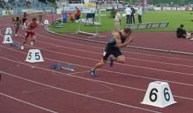
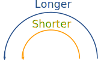
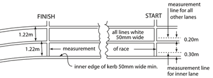
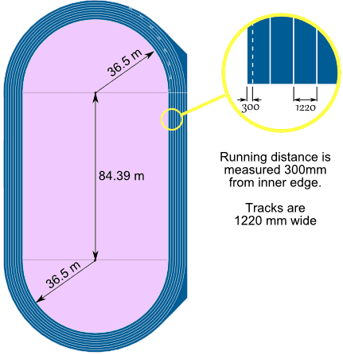
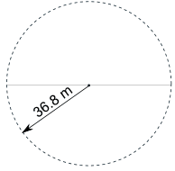
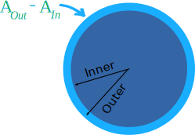

Activity: The Olympic Athletics Track
|  | Have you ever watched some of the races in the Olympic Games and wondered why the athletes don't all start from the same part of the track? |
It is called a "staggered start".
Why a Staggered Start?

If they all started from the same line, then the athletes in the outer lanes would have to run further than the athletes in the inner lanes, because of the semicircles at the top and bottom of the track.
So each lane has to have a special starting position so they all have to run the same distance.
Let's learn how to calculate the correct positions for the 400 m running race
How Far?
How far does each athlete run when he/she completes one lap of the track?
Let's look first at the route followed by the runner in Lane 1 (the inside lane).
The rules state that you measure 0.3 m from the inner edge of the lane (about where the runner runs) for Lane 1 if there is a curb. And 0.2 m for all other lanes:

From the IAAF Rulebook, Rule 160.2
So this is what it looks like for Lane 1:

On the curved sections Lane 1 has a radius of 36.5, but we need to add 0.3 m for the "running position", for a total of 36.8 m
|  |
And together the two curved parts make a circle of radius 36.8m. See the page Circle to learn more about radius and circumference. |
So, how far would you have to run? Answer: the Circumference of the circle (plus the straight parts)
The radius is 36.8 m
So the Circumference = 2 × π × radius = 2 × π × 36.8 m = 231.22 m
Add the two straight section of 84.39 m:
231.22 + 2 × 84.39 m = 231.22 + 168.78 = 400 m
Wow! The inside lane is exactly 400 m.
Well, that is how it is designed.
But What About Lane 2?
Each lane is 1220 wide, so the radius for Lane 2 is 36.5 + 1.22 = 37.72 m
And we need to add 0.2 m for the Lane 2 "running position" (remember: 0.3 m for Lane 1, 0.2 m for other lanes), for a total of 37.92 m
The radius is 37.92 m
So the Circumference = 2 × π × 37.92 m = 238.26 m (to nearest 0.01m)
Add the two straight section of 84.39 m:
238.26 m + 2 × 84.39 m = 238.26 m + 168.78 m = 407.04 m
That is 7.04 m longer than Lane 1 ...
... so Lane 2 should start 7.04 m after Lane 1 to be fair
Your Turn
Can you complete the following table?
| Lane | Radius | Circumference | Total distance | Staggered Start |
| 1 | 36.8 m | 231.22 m | 400 m | 0 m |
| 2 | 37.92 m | 238.26 m | 407.04 m | 7.04 m |
| 3 | ||||
| 4 | ||||
| 5 | ||||
| 6 | ||||
| 7 | ||||
| 8 |
You should have found that the runner in Lane 8 starts about 53 meters in front of the runner in Lane 1!
- Does that surprise you?
- Is it fair?
It's fair because, with the staggered start, each athlete runs exactly 400 meters.
But some people say that the athletes in the inner lanes have an advantage because they can see the other athletes, and know what work they need to do to catch up.
On the other hand, others argue that the athletes in the outer lanes don't have such tight curves to run. So, unless all races could be run on a straight stretch (like the 100 meters), it will never be totally fair.
Bonus Activity: Area
You might want to investigate the area of each lane (imagine you want to paint them different colors).
The area is made up of the circular area and the straights.

We don't want the athletes running position, we want the radius of the edge.
The radius of the inside of Lane 1 is 36.5 m, so the radius of the outside of Lane 1 (which is the same as the radius of the inside of Lane 2) must be 36.5 m + 1.22 m = 37.72 m
Area = π × radius2 (read more on the Circle page)
And the area of both straights = 2 × 1.22 m × 84.39 m = 205.9 m2 (to one decimal).
You can do the rest! Will the areas be different? By a little, or a lot?
| Lane | Inner radius | Outer radius | AIn = Area of circle with Inner radius | AOut = Area of circle with Outer radius | AOut - AIn | Area of both straights | Total area of lane |
| 1 | 36.5 m | 37.72 m | 4,185.4 m2 | 4,469.9 m2 | 284.5 m2 | 205.9 m2 | 490.4 m2 |
| 2 | 37.72 m | ||||||
| 3 | |||||||
| 4 | |||||||
| 5 | |||||||
| 6 | |||||||
| 7 | |||||||
| 8 |